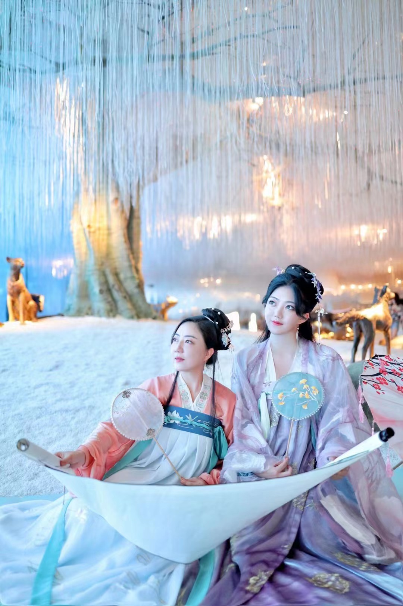

Knowledge, Tools, and Skills
I self learned many Adobe tools like photoshop, indesign, premiere, etc. I've been interning as a member of the directing team making all kinds of TV shows including reality show, competition shows, and game shows during my gap year. I was also an editorial and styling assistant at a fashion magazine, and I'm also a huge fan of arts. I love musicals, plays, dramas, all kinds of paintings and drawings.
What is good design?
I think a good design should be straight forward and aesthetically pleasing. ***Add a Photo Grid*** Good Design
In the Future
For this class, I want to learn more about digital designs and to make better works.
For my sudies, I'm going to apply for masters programs this fall. I want to study entertainment industry management and work in that field for a career.
more photos
generated by Monique
Why make a spark when you can light a fire?